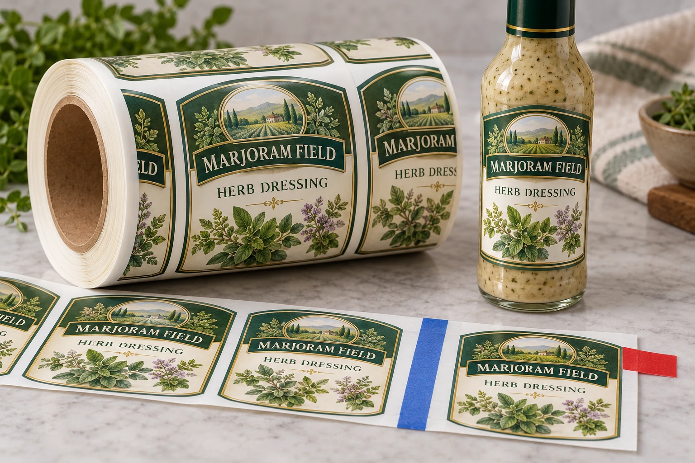

The delivery note states that the order contains splices. The line team needs a more useful answer: which delivered roll contains each declared joint, what construction was agreed, and how unusable label positions are treated in the quantity.
Connect each joint entry to a physical roll and an agreed handling instruction. An order-level splice total cannot provide that connection on its own.

AI-generated packaging planning example. Marjoram Field is a fictional brand; not a customer project, production test or usable retail artwork.
Give the roll a stable identity
Ask the supplier how each finished roll is identified on its packaging and documentation. Link that reference to the order, artwork version and relevant production lot. If a carton contains several rolls, a carton number alone may not identify which one has the declared joint.
Agree the location basis when a joint position is supplied. It might use a supplier-defined web position or another practical reference, but its meaning must be explicit. A number without an origin, direction or stated approximation can look precise while being unusable at receiving.
| Per-roll handoff | What must remain linked |
|---|---|
| Roll identity | Physical roll mark, order, artwork and lot reference |
| Declared joints | Count for this roll, including any unresolved discrepancy |
| Construction | Applicable agreed joint/flag instruction and revision |
| Position basis | Defined origin/direction and whether the location is approximate |
| Quantity treatment | Usable quantity basis and handling of damaged or excluded positions |
| Receiving action | Responsible owner and route for a roll that differs from the agreement |
This is a handoff format rather than a recommended number of joints. A joint-count limit is only meaningful alongside the actual equipment constraints, construction and commercial agreement.
Keep joint count separate from usable label quantity
Ask whether the stated order quantity includes positions affected by the splice or whether those positions are excluded under the supplier's agreed counting method. Do not assume one joint always consumes one label or that a nominal roll count represents usable finished labels.
For a hypothetical order with several rolls, show the per-roll values and the reconciled order total. Leave any discrepancy visible until the parties agree its treatment. The purpose is to avoid billing and production plans relying on different meanings of quantity, not to impose an unverified automatic allowance.
Route exceptions before the roll reaches the station
Receiving can compare the physical roll identity and supplied record without operating a machine. If a joint is undeclared, the flag differs or the construction is unclear, identify the affected roll and refer it to the agreed owner. Do not let a generic carton note override a roll-specific discrepancy.
Any observation of joint travel through equipment belongs under the equipment team's approved procedure. A photograph of tape cannot validate machine compatibility. FINAT's publicly available Technical Handbook brochure lists joins among its subjects, but the contents list does not supply the full operating method or approve this pictured example.
Use co-packer receiving and release, missing-label events and unwind presentation to link the roll record to its next owner.
Short answer
Do not leave splice acceptance to the delivery day. The purchase specification should state whether splices are allowed, the maximum per roll, join construction, tape side, web alignment, edge flag, count method and carton record. A zero-splice rule is valid when the line requires it, but it carries yield and cost consequences.
A splice is where two lengths of release liner are joined so useful production can continue. It is not automatically poor workmanship. An unmarked, bulky or crooked splice is poor control.
What a controlled splice needs
| Control | Purpose | Failure if ignored |
|---|---|---|
| Web edge alignment | Maintains tracking through guides | Web walks and labels shift |
| Approved tape and side | Creates a thin secure join | Tape catches guides or releases |
| Pitch control | Preserves the next label position | Sensor or applicator loses registration |
| Edge flag | Warns the operator or detector | Unexpected stop or damaged product |
| Roll and carton record | Supports planning and traceability | Shift cannot identify affected rolls |
A composite co-packer dispute
This is a composite planning example. A co-packer stops a beverage run after finding a red flag on a roll and reports a defective product. The converter replies that one splice per roll is standard. Neither side can produce an approved splice clause.
Both sides have a practical concern in this hypothetical dispute. The converter is trying not to discard a long run for one web break. The co-packer has a line where an unexpected join can lose product and cleaning time. The unresolved handoff began before production: purchasing approved price, core and unwind but never approved splice handling.
Zero-splice rolls are not free
Requiring every roll to be splice-free can increase waste, shorten roll lengths or raise converting cost. It may be justified for nonstop high-speed lines, vision-inspected applications or processes where a join cannot safely pass. Where the responsible equipment team permits a defined joint, compare its documented operating and commercial consequences with a splice-free proposal.
The point is not to defend splices. It is to price the operational consequence honestly. A converter should disclose the rule, and a buyer should state what the machine can tolerate.
Test the join, not only the labels
A line trial usually focuses on adhesion and placement. Ask the responsible equipment team whether and how a representative joint should be evaluated through the applicable web path under its approved procedure. Agree the observations and handling before any trial.
Clear film liners, thin PET liners and paper liners may need different joining methods. FINAT's technical handbook specifically includes recommended joins in self-adhesive laminates for roll labels, alongside tests for liner die strike and dispensing. Use the applicable supplier and machine guidance rather than copying one shop-floor method across every construction.
Suggested purchase-order fields
- Splices allowed: yes or no.
- Maximum splices per roll and per order.
- Approved join geometry, tape and tape side.
- Maximum web-edge offset and roll-width tolerance.
- Required flag color, size and position.
- Whether quantities exclude unusable labels around the join.
- Roll label and carton record for splice count.
- Line action: run, slow, stop or automatically reject.
Incoming inspection
Check roll edges, telescoping, core damage and splice flags before loading. Match roll numbers to the packing list. When the line rejects a splice, retain the join and record machine speed, sensor setting and failure mode; “bad roll” is not enough information for corrective action.
FINAT's official technical handbook overview identifies industry guidance for roll-label joins and dispensing tests. Pair the splice clause with the Label Roll Core Size and Outer Diameter Guide.
Send the relevant project details
Discuss a roll-level splice brief with application equipment reference, allowed joint instruction if available, roll identity requirements, quantities and the receiving owner's questions. The form opens an email draft; use listed email or WhatsApp for files. Joint limits, construction, counting and machine compatibility require agreement.